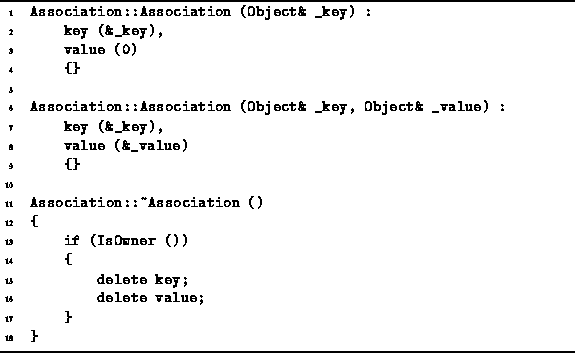
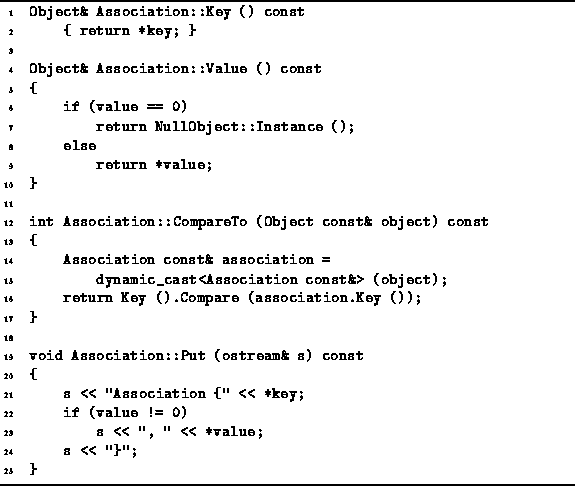

Data Structures and Algorithms
with Object-Oriented Design Patterns in C++
Data Structures and Algorithms
with Object-Oriented Design Patterns in C++
Two constructors and the destructor are defined in Program  .
The first constructor takes as its lone argument
a reference to an Object.
It makes its key member variable point at the specified object
and sets the value pointer to zero.
The second constructor takes two arguments--both of them a reference to an Object.
The key and value member variables are made
to point at the corresponding objects.
.
The first constructor takes as its lone argument
a reference to an Object.
It makes its key member variable point at the specified object
and sets the value pointer to zero.
The second constructor takes two arguments--both of them a reference to an Object.
The key and value member variables are made
to point at the corresponding objects.

Program: Association Class Constructor and Destructor
The destructor follows the general framework for the destructor of a class derived from Ownership. If the association is the owner of the contained key and value, then those objects must be deleted by the destructor.
The remaining member functions of the Association class
are defined in Program .
The first two, Key and Value, are member variable accessors.
The former returns a reference to the key object
obtained by dereferencing the key member variable;
the latter, a reference to the value object
obtained by dereferencing the value member variable.

Program: Association Class Member Functions
The CompareTo function is one place where an association distinguishes between the key and the value. The CompareTo function only operates on the key. The CompareTo function takes as its lone argument a const reference to Object. It uses the dynamiccast operator to convert the argument to an Association. The result of the comparison is based solely on the keys of the objects--the values have no rôle in the comparison.
Finally, the purpose of the Put member function is to print out a representation of the association. The implementation is trivial and needs no further explanation.
 Copyright © 1997 by Bruno R. Preiss, P.Eng. All rights reserved.
Copyright © 1997 by Bruno R. Preiss, P.Eng. All rights reserved.